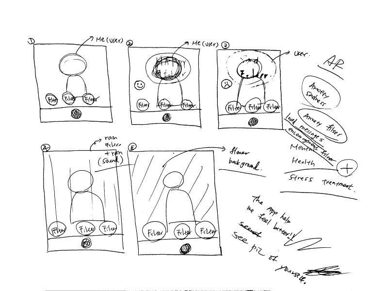
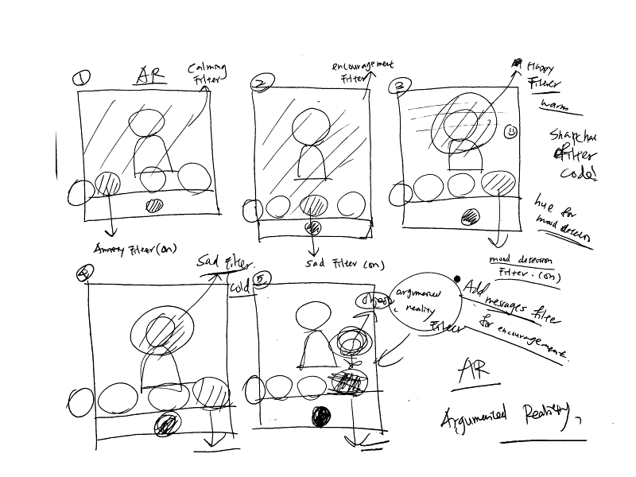

Settings
People who involves in this project are ones who have countered depressions, anxiety, or mood disorder. I will be using virtual environment for this project because I'm creating an argumented reality environment for my users. For the task part, I will need to create different filters, such as anxiety filter, sad filter, and mood detection filter. For the sad filter, there will be a text message included in the filter for the purpose of encouragement.
Sequence
I believe people who ever have feelings of anxiety and sadness (almost everyone has experience in that) will want to use it. Steps: I will use mainly two libaries. One of them is the mood detection library. Another one is the argmented reality library. There will be a lot of coding involved as well as website layout design.
Satisfaction
Motivation: My goal for this project is to make users happy and prevent them from suffering stress, anxiety, and depression. I think people who ever have experienced these conditions will want to use my design. Enable to accomplish: I think this project will prevent peoeple from being stressed and bring happiness to my users. Need: This project will fill the needs of people who is anxious or sad. This project make them happy and encourage them to stay strong in life.
 